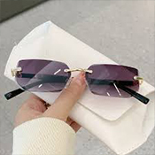
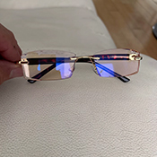

I Recently Discovered These Revolutionary New Glasses
A genius startup is turning the $150 billion glasses industry on its head.
For The Past decade(s), The Prescription Glasses Industry Had Just 3 Big Companies That Could Set Any Prices They Wanted And Kept Ripping Off Customers.
A genius startup is turning the $150 billion glasses industry on its head.
The company called Blue Lume has figured out a way to revolutionize the optical industry (even the biggest optical experts agree) at a fraction of the price.
With millions of people struggling with changing prescriptions and expensive eye exams, their new Blue Lume are on pace to become the most successful glasses in modern history.
What Is It?
Meet the Blue Lume.
The company behind the Blue Lume recruited optical engineers from the aerospace and medical industry to invent their latest model.
Compared to traditional prescription glasses, this one pair replaces your entire collection - automatically adjusting to give you perfect vision whether near or far!
They set out to eliminate the hassle of multiple glasses, constant prescriptions, and expensive eye appointments. The result? Blue Lume created the first truly adaptive glasses that adjust automatically to any vision level.
But here's where it gets revolutionary...
The Blue Lume features self-adjusting technology that's 100% prescription-free - automatically adapting from -10 to +10 diopters instantly.
No more eye exams. No prescription updates. No multiple pairs. One pair adapts to 100% of your vision changes automatically.
Most people say it feels like magic the first time they put them on. But how does this new technology actually work?
How Does It Work?
Blue Lume invented an Auto-Adjust System that uses a new type of lens technology to automatically optimize your vision, then delivers crystal clear sight instantly.
It's really easy. Simply put them on and the lenses automatically adjust to your vision needs.
They're noticeably lighter than regular glasses at under 1 ounce, most people forget they're wearing them. (except for the fact they can now see both far & near)
The Blue Lume is designed for everyone who experiences fluctuating vision - whether it's nearsightedness or farsightedness.
Gone are the days of eye tests and endless lens changes. You can wear them at the office, driving, reading... these glasses adapt automatically, ensuring you can always see clearly wherever you go.
Imagine seamlessly switching between perfect focus for both near and far objects, without the need to change lenses or glasses.
What Else Can The Blue Lume Do?
1. Blue Light Filter
Blue Lume filtering harmful blue light
We live in a digital world where screens are everywhere - at work, at home, and in our pockets. With so much time spent staring at digital devices, your eyes are constantly exposed to harmful blue light that causes strain, headaches, and sleep disruption. The Blue Lume filters harmful blue light.
2. Automatic Sun Protection
Photochromic lenses automatically darkening in sunlight for UV protection
No more switching between glasses and sunglasses! Blue Lume feature photochromic technology that instantly darkens in sunlight for UV protection, then seamlessly transitions back to clear indoors - like having two pairs in one.
3. Extremely Durable
Blue Lume almost unbreakable
Made from premium materials with scratch-resistant coating, Blue Lume are engineered for durability while weighing less than 1 ounce. Making you forget you're actually wearing them.
How Much Does It Cost?
Traditional prescription glasses typically cost $200-400 for a complete pair , and that's before you factor in regular eye exams and lens updates. So you'd expect the Blue Lume to cost at least this much...
But what if I told you that the Blue Lume normally retails for just $79.98 - already a fraction of what you'd pay for traditional prescription glasses!
HOWEVER, do you know what's even better than paying the already reasonable $79.98 price?
Their current 50% promotional discount, where you can get yours for just $39.99 - less than most people spend on a single eye exam!
Click here to claim a discounted Blue Lume (if it's still available) >>
Offer ends on at .
How Can It Be So Affordable?
Did you know that just a handful of giant companies control most of the glasses industry worldwide? This monopoly means fewer choices for us, higher prices, and we end up buying more than we really need.
The Blue Lume is different. They don’t belong to one of these monopolies. They only sell online, avoid expensive middlemen, and pass the savings directly to you.
Instead of relying on inflated prices and limited competition, they let their fair pricing, newly invented designs, and positive reviews do the talking!
Conclusion: Is It Worth It?
100% Yes. With vision problems affecting millions, the Blue Lume is the future way to see clearly and comfortably.
The time to buy the Blue Lume is now before this discount runs out. It's already selling like crazy.
You'll quickly see why thousands of Americans have ordered theirs already!
The Blue Lume feels like a $200 product priced at $39.99 (with the exclusive 50% discount).
The icing on the cake is the price. If it's still on promotion for under $100 - definitely, pick one up before they go.
In case you couldn't guess, I LOVED it! You won't find better glasses for a better price.
How Do I Get Real Blue Lume?
No knockoffs please, the real thing is essential! Don't get stuck with some cheap imitation that doesn't work!
Get your Blue Lume from their official website here.
The Blue Lume comes with a 90-day money-back guarantee and 10-year warranty, so there's no risk for you! If you act now, you can secure a 50% discount available for today only.
It's As Simple As That!
Blue Lume
Get 50% discount TODAY only
Some Questions We've Had
Q: Can these glasses be used on a daily basis?
Yes! They are designed to be comfortable and safe for everyday use. On top of that the blue light filtering cancels out blue light and radiation, helping with eye strain.
Q: Can I use these glasses both indoors and outdoors?
Yes, you can use these glasses anywhere – both indoors and outdoors, from reading books to working on your phone or watching TV. The photochromic lenses adjust perfectly to different lighting conditions.
Q: Do they require any maintenance?
These glasses require minimal maintenance. Simply clean the lenses with a soft cloth to keep them in top condition.
Q: How long will they last?
With proper care, the Blue Lume can last for many years. They come with a 10-year warranty for peace of mind.
It's As Simple As That!
Blue Lume
Get 50% discount TODAY only
TIP: You will receive an extra discount if you order more than one Blue Lume. Benefit from this offer now and have backup glasses, or make your family and friends happy with this amazing gift!
People can’t stop talking about these glasses…
Just take a look at these reviews from their website!
No more eye strain!
Reviewed in the United States on
I’ve been using the Blue Lume for a few weeks now, and I’m genuinely impressed. I used to have eye strain and headaches after long hours on my computer, now I can work all day without blurry vision.
Huge difference!
Reviewed in the United States on
I’ve been using the Blue Lume for a few weeks now, and I’m genuinely impressed. They automatically adjust to my vision, so I don’t have to worry about constantly switching between different pairs.

Game-changer glasses
Reviewed in the United States on
I never thought I’d love a pair of glasses this much. The convenience of having them automatically adjust to my vision is amazing. I can finally see everything clearly without constantly shifting between two different pairs of glasses.
